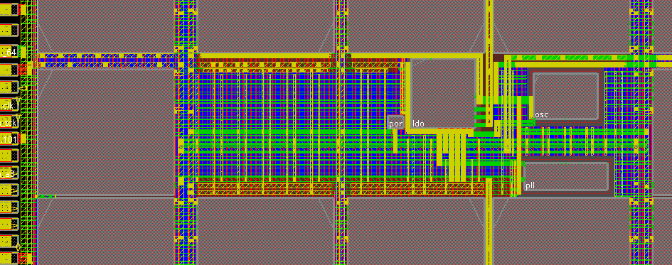

Analog & mixed-signal layout
Transistor-level implementation for PLLs, ADCs and DACs, LDOs, power management circuits, and analog front ends.
Our Services
Custom analog layout, physical design, and standard cell compiler capabilities. Explore the engineering expertise behind our turnkey and EDA tools solutions.
Two solution domains. Three specialist services.
SoC, ASIC, FPGA Turnkey Solution
Precision at the transistor level. We develop custom analog and mixed-signal layouts around your circuit requirements, process technology, and performance targets.
From clock generation and data converters to power management and sensor interfaces, layout and parasitic extraction help connect circuit intent to physical implementation.
Discuss your analog layout needs
Transistor-level implementation for PLLs, ADCs and DACs, LDOs, power management circuits, and analog front ends.
Extract parasitics and iterate with the circuit team to balance performance, power, and area on your target process.
Support post-layout evaluation across process corners and Monte Carlo simulations, with handoff data for the next stage.
Custom layout deliverables, parasitic extraction data, and agreed characterization reports. Scope and bring-up support are defined around your project.
SoC, ASIC, FPGA Turnkey Solution
From a verified netlist to a sign-off-ready implementation. Our physical design team works through floorplanning, place-and-route, and timing closure with power, performance, and area in focus.
Early floorplan decisions and a structured closure process keep implementation aligned with your target technology and tape-out requirements.
Discuss your physical design needs
Establish the floorplan, power distribution, and timing constraints from your verified netlist and target technology node.
Iterate placement, clock tree synthesis, routing, and static timing analysis to close timing, power, and area targets.
Prepare DRC, LVS, and STA sign-off, design-for-manufacturability checks, and power and IR-drop analysis for GDS-II handoff.
GDS-II handoff package, timing closure report, DRC/LVS reports, power and IR-drop analysis, and agreed sign-off documentation.
EDA Tools Solution
Build consistent standard cell libraries through a compiler-driven flow configured around your process technology, library architecture, and performance targets.
Automated generation reduces repetitive manual work across cell families while maintaining a repeatable path from cell definition to validated views for implementation and sign-off.
Discuss your standard cell requirementsConfigure cell families, drive strengths, threshold-voltage options, track height, and design constraints for the target process and application.
Generate consistent physical cell implementations through reusable templates, process-aware rules, and repeatable automation.
Prepare the required physical and logical library views, with DRC/LVS checks and characterization support for integration into the digital implementation flow.
Configured compiler flow, generated cell library, agreed physical and logical views, validation reports, and workflow documentation tailored to the project scope.
Let's build together
Share your process, scope, and design goals. We'll explore how our team can help.